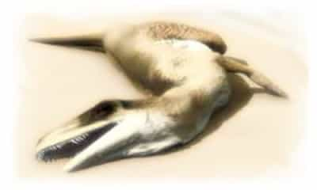
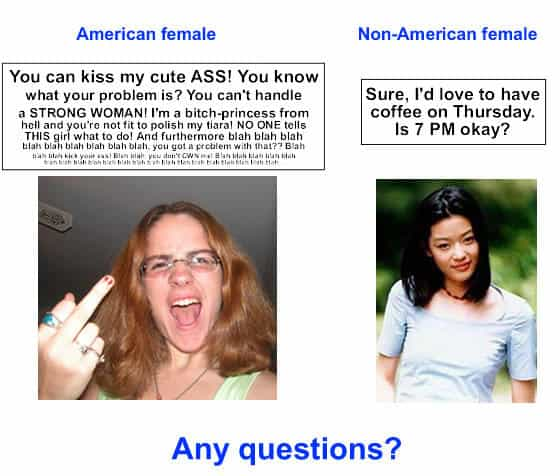

Samseau is a player philosopher psychologist who enjoys a good discussion. You can follow him on Twitter.


Back in 2003, on the Nice Guy Forums, a user by the name of Bonecrcker cranked out a series of posts talking about the true state of American women, and disappeared never to return again. The Nice Guy community quickly took notice and added the posts to their forum’s “Best Of” section (which I can no longer find), so it seems the only place where one can find a fully preserved Book of Bonecrcker is over at the NO MA’AM blog.
To call this guy influential is an understatement – he was a solid decade ahead of his time. He’s also one of the most radical writers on women I’ve ever read. More radical than Roosh or Roissy. The manosphere consists of two parts – it’s dark side and light side, where the light side is focused on self-improvement and progress and the dark side is focused on biting criticism and harsh exposure to the nature and reality of women. The light side’s biggest influences comes from Pook, but the dark side’s biggest influences come from Bonecrcker.
Without further ado, let’s examine some Bonecrcker passages. Keep in mind, I’m posting more than what you can read in just one sitting. I’m showing you a smattering of passages for you to pick and choose through right now.
—
Bonecrker #10 — Women Choosing Scum:
There are two reasons women go after scum… the one they tell themselves and the one that’s true.
The one they tell themselves has to do with the archetype of redemption. Love redeems all things. To a woman, love redeeming a bad man proves the love is real (too bad their love ain’t real, lol). Also, a man who treats everyone poorly but herself, must really love her. This is the biggest crock of bull-ony… but exploiting this sick, sad, self-deception will account for 90% of your free pussy if you live in the US.
Unfortunately, the real reason women dig bad/low quality men is they are bad/low quality themselves. These men have attitudes and behaviours that match their own.
Excitement is supposed to come from risk-taking behaviours that men like to engage in to have fun. But women find bad behavior exciting instead. It’s normal for women to be attracted to men that like sky-diving, mountain climbing, and going off on adventures at the spur of the moment. It’s abnormal for women to be attracted to men that like to beat women, have been in jail, and take drugs. But that’s exactly what’s going on today. All of the losers have all the women they can deal with (hehe, but evil people are bad for you….both ways), while all of the real men do without.
—
BoneCrcker #5 — Women Choosing Losers:
All women say they want a dominant, successful, high status man with enlightened values. It is extremely easy to identify where a man is in the pecking order; by his job, by his dress, by the way he talks and acts and by the way other men treat him. Everyone knows where a man stands.
This includes women, who could easily snap up a man like this who freely advertises if he is available or not.
The problem is that almost no women actually follow through with this behavior. Dominant, successful, high status men with enlightened values are regularly passed up for dangerous, weak, emotionally unstable drug dealers with bad BO and a rap sheet as long as my arm. The younger and more attractive a woman is, the more likely she is to ignore the good men and screw as many of the bad men as she can get her hands on. Not all women do this. Some screw as many fraternity brothers as they can handle a night, just as long as they are drunk/high and treat her like dirt. Any man who doesn’t act this way is labelled a loser, no matter how high status or macho. It’s hilarious, and deeply, deeply sick.
Then, when a woman reaches about age 25, she starts to hunt for a man who is both wealthy and weak willed. Both qualities are very important, because her sole purpose for hunting this man is to attach herself vampire-like onto him and drain him for all he is worth. They continue to screw bad men during the entire marriage. Strong willed men quickly say no to this crapola and move on to the next woman. After a while, they start to wonder if all women are vampires trying to trick them into a bad situation. Certainly they don’t meet anyone who actually cares for him and sincerely wants to be his wife.
Many of our country’s most powerful men are either unmarried, taken to the cleaners by divorce, or are stuck in a marriage that is an obvious lie, often making up for it with dishonourable behaviour. A perfect example of this is Bill Clinton. His wife is an obvious lesbian who only married him because he was going places and could further her own political ambitions (the pay off isn’t always in money, lol).
I’m tempted to say that American women are unable to recognize signs of status, power and high quality in men. But it’s not true. They know full well what the deal is and purposefully choose the weak, psychotic, scum of the earth until they want a meal ticket.
Real men are left without.
—
Bonecrcker #6 – Women Choosing Extinction:

I just downloaded the book, If Men Have All The Power, How Come Women Make The Rules? Excellent book, BTW. It’s filled with all sorts of interesting information.
Here’s a quote that got me to thinking (originally from The Woman That Never Evolved, by Sarah Blaffer Hardy):
“The central organizing principle of primate social life is competition between females and especially female lineages… Females should be, if anything, more competitive than males, not less, although the manner in which females compete may be less direct, less boisterous, and hence, more difficult to measure.”
Normally, women compete fiercely amongst each other for men. Unlike animals, human children take a looooooong time to mature and our most powerful survival ability (our mind) takes significant effort to train and develop. Before the modern era, any woman stupid enough to take a weak, deviant man, who left after sex… died. At the very least, her child had slim to none survival value. Her lineage died out. Normally, women compete for the best men, that competition being intense when they are scarce. One thing they don’t do is willingly have sex with an inappropriate man, unless there absolutely isn’t anyone else. Men also compete for the best women. Or rather, for the status among our peers that attracts the best women. However, since we don’t actually have to bear the children, that competition isn’t as fierce. Survival of our line has less to do with who we choose and more to do with what we do. We (men) compete in who does things best. Women compete in who can get the best man. Men have the option of leaving. A woman who left usually died. That’s the way it’s always been and the way it should be.
But American women aren’t normal. They have absolutely stopped competing for good men. They go out of their way to devalue them. They freely engage in behaviors that result in the extinction of their lineage. They leave. They refuse to raise their children. They engage in infidelity. They choose disposable partners based on deviant behavior. The reason why women seem to be so scarce is not because they have made themselves unavailable but because they have ceased having any interest whatsoever in extending their female lineage to the next generation. There is a natural consequence for that… extinction. The children of these women grow up powerless and feral, with increasingly lower status. Eventually, their lines will disappear.
The question we should be asking ourselves is, are we a valuable prize that would normally be fiercely competed over? If you are healthy, strong, successful, educated and have values that would promote the well being of a family, then that answer is yes. We have been lied to, repeatedly and in a systematic manner. What is interesting is what might happen if you left our abnormal women and went someplace where the women are desperately competing with each other for the best men. Especially if most of the men who live there don’t have these traits. You might come away with a different opinion of where you are in the pecking order.
Food for thought.
—
Bonecrcker #2 – Local vs. Foreign Women:

Men and women are two sides of the same coin. Without each other, there can be no fulfillment and no peace of mind. Together, there islife. This is the way it has been since the very beginning. It is an active thing, not a passive one. It’s not enough for the people to just show up in each others lives. Each of you needs to actively love the other.
Many American men are willing to do this. Almost all American women are not. To make matters worse, these women do not value the men who are willing to love them. Instead, they value the men who couldn’t give a shit about anything. He gets laid constantly and gives nothing to anyone (even himself). Since this type of man is good for nothing and is often a criminal, the last thing he is interested in or is capable of is taking care of a woman or a family. Women are also like this themselves, but pretend they are not. That pretending often extends towards making a phoney marriage and having several children she has no intention of putting any effort into raising. Most of the time, the point of the marriage is to manipulate the system into fleecing a good man of all his possessions…..rinse, repeat, until she gets too old.
This is not normal. For whatever reason, it is a problem endemic to westernized countries but is worst in the US, where our laws seriously enable these behaviours.
What many American men are figuring out though is they don’t have to put up with this. By understanding the problem and its various aspects and, most importantly, the actual depth of the problem, he can avoid most of it, even fight back. The biggest obstacle though, is he is incomplete without a legitimate love in his life. American women use this fact as their greatest source of sinister manipulation. They will dangle the image of this in front of you constantly but never, ever give it to you. The reason is simple: they can’t. Because they can’t, they are completely unacceptable as anything but a casual sexual fling. But one that is constantly trying to do you harm, requiring extreme vigilance and protective measures. Hopping from one loser to the next, in the vain hope that the next one might not be like this is a depressing way to live. Rather than find a rare jewel, most men simply give up after a while and retire from “the game”.
Most men don’t know that this is abnormal. They think all women are like this and have always been this way. That’s a dirty lie. A lie that women in this country foster in an attempt to keep men from looking around. It turns out, that things were never like this for our grandfathers and great grandfathers. It’s a recent problem. More importantly, it’s a localized one.
In large chunks of the world, women aren’t like this. They are the way they are supposed to be. If you bond with one and then love them, they will love you back. Although this is only the bare minimumneeded for a good marriage and a good life, it changes thingsdramatically.
This means that it is a good idea to date a number of women from these places. Because you will find a jewel there eventually. No matter what, you will find a large pool of women who are sincere in their attempts to be with you. Some of these women will be sexually promiscuous. Some of them will be nuns. Most will be somewhere in between. Luckily, sincerely loving women will be common, no matter what she is like elsewise…….because it’s a seperate issue. If you want a nun or a tart, a schoolteacher, a welfare mom or a doctor, you will find someone sincere. Since you will also find the occassional evil person mixed in, you must learn to tell the difference. But the odds are stacked in your favour.
That just doesn’t exist in the US anymore (but it was once the rule, not the exception).
—
Bonecrcker #23 – Bad Boys vs. Alphas:
“Badboys” are pussies, not alpha males. The easiest way to tell if a man is alpha is to observe if he has the respect and cooperation of other men, especially other men in general (i.e. he has power and respect in society, not just socially). You very rarely see a “badboy” meet these criteria. When you do, it’s usually an alpha fooling around to get laid.
Alpha males don’t usually get the chicks. They get the best chick and she tends to stick around and beat the shit out of any other girls who come around.
The multiple sex partner thing is the omega male’s gig. You usually see all sorts of deviant behavior going on in addition to this. Although he is getting laid, he is powerless in relationships as well as every other aspect of his life. No one respects him, not even the psycho chicks who screw him.
Alpha’s get snapped up quickly. Beta males screw a lot early in life while women are competing over them, and then settle down. Omegas can’t form stable relationships. And Zeta males rarely get laid. Most people are betas.
Humans aren’t apes. We have a different mating strategy than them. Women compete for the best man they can get (at a very young age) and then stick with him for life. He sometimes cheats, but not to reproduce. She never cheats. Everyone pairs up. Whenever you see people straying from this paradigm, fucked-upness starts to happen. This is what is happening with women. They are becoming more and more omega. Their clustering around these men is not a normal thing, which is why it is so fucked up in all other ways.
—
Bonecrcker #11 – Women and Racism:
In my experience, racism plays a big part of what’s going on with American women. Several times I have met women whose attraction to men is race based… the more negatively stereotyped, the better. Behind their back, they use racial slurs, even when talking about their partner. You talk to them and it becomes clear that they have strong racist views, usually negative. They are chasing bad men and the racist views colors these men as bad. So, they go after them. It’s a complicated issue, and one that women will test you on to see if you will accept it from them.
For example, there was one stripper I knew. For awhile, she was sizing me up as a potential man. One day, out of the blue, she says this to me, “I’ve been with a lot of black boys.” “Do you think less of me?” My answer to her at the time was, “Of course not.”
But that was the wrong answer. My answer should have been yes. There are several reasons. First of all, she is testing me, not looking for reassurance of her worth. She wants to see if I will accept her in a devalued state. If the answer to that is yes, she loses interest (she did lol) and, at the same time, goes hog wild in the process of devaluing herself further. On the surface, she wants to know if I’m racist. But what she is really saying is she is racist, and a whore to boot. What’s behind her statement is several years of screwing black men, but only from the criminal class of society. She did this in exchange for money and drugs. Certainly she would have no interest in a black man in a 3-piece suit and a law degree. Part of the manipulation has to do with what she means by “black boys.” She means black men from the criminal class of society. But, phrasing it this way is a trap. If you say it devalues her, it seems like something racist (being with black guys devalues you) but, it’s the having sex with men from the criminal class that devalues her. If you say no to this sort of behavior, it implies that you are racist. You’ll see a lot of manipulation along these lines in society, especially with women. They want you to accept deviant behavior by associating it to minorities. Reject the behavior and they act as if you rejected the minority.
You will see this pattern repeatedly with American women… multiple minority partners, sometimes multiple children of mixed racial background. The big lie is that inter-racial couples are now accepted, so people feel free to get together with those they like. But the truth is that racism and fucked-upness are behind most of these relationships (white men with black women; seem to me to be the exception). Look for extreme racist views in one or both of the partners (should be the LAST thing in an inter-racial couple), a history of trading sex for money and drugs, and multiple one night stands, often resulting in children. Like any good lie, there is always a grain of truth in the center to give it credibility. There are lots of legitimate inter-racial marriages. You can tell the legitimate ones by their stability, high degree of education of both partners, and successful career the man has.
Racist views of women are a part of what’s going on.
—
Bonecrcker #94 – Evil, Not Power, Is The Defining Attribute Of Women’s Attraction Toward Deviant Men:
Women aren’t attracted to alpha males and they most certainly have no fear of men. Our society, on every level, goes out of its way to protect them. For most men, harming a woman is taboo.
What a woman wants from a man isn’t for him to be powerful. If this was true than large, strong, rich men with high IQs would be overrun with pussy. Sadly, this isn’t the case. At best, a woman looks for a man like this who is easily manipulated (a rare find) so that she can feed off him during the last stages of her self-destruction. But what women go after with zeal and verve are the losers of our society…..uneducated, drug-using, criminal scum. Are these men powerful? Absolutely not. That’s why they stab you in the back but wouldn’t dare face you man to man. It’s also why they are complete failures in life…..they are weak beyond belief. But, other than being weak these bozos have one thing in common…..they are all evil. And it is that evil that attracts women.
Evil, not power, is the defining attribute of women’s attraction toward deviant men.
—
Bonecrcker #31 – Women Are Sick
Women are sick. They are mentally ill. One of the characteristics of mental illness is stereotyping. What that means is that one woman is sick in exactly the same way as another. You see the same patterns over and over again.
Our culture is involved in a complex scam trying to cover up this situation, particularly from young men. The worst case scenario is the totally oblivious guy who gets himself into a bad situation. However, most guys know something is wrong, but just can’t put their finger on it because of the brainwashing. At first, they figure they just met some wacko and then try again. When the next one turns out just the same, they start to investigate if something is wrong with themselves (pleeeennnty of asshole relationship experts are willing to feed this). After awhile they come to the amazing conclusion that, yes, something is wrong with the entire female population. But they only know that something is wrong. And they don’t know that “something” can be mapped out and understood.
Every time we examine a case, we learn a little more about the specifics of that “something”. Understanding the nature of a thing gives you power over it. Because humans have free will and exercise it in every single facet of our existence, you can never change another. Only they can change themselves, and only by choosing to do so, with no influence possible from anyone or anything. However, that doesn’t mean you can’t get things you need from them or have to put up with their bullshit. Understanding that “something” gives you vital information on how to 1) get what you want and need from women and 2) how to prevent them from causing you undue hardship.
It’s not simple, but it is understandable, reliable and effective.
—
As you can see, Bonecrcker wrote on a wide variety of subjects related to a man’s life in America, and touches upon things that are only recently being discovered. For example, the fact that 25% of American women are mentally ill – Bonecrcker noticed this back in 2003! There are an abnormally large number of women who are dangerous and you should take steps to protect yourself from them.
Bonecrcker touches upon how American women are mostly worthless, and that a man today can only use American women for sex without seriously endangering himself in any way. He plainly states that women’s mating preferences aren’t normal, something I think most American men subconsciously understand, even if they cannot articulate it. Bonecrcker may have been one of the first to touch upon how women use ad-hominem shaming language to get men to conform.
The above work belongs to what I would call a powerful thinker. Don’t forget to read the rest of Bonecrcker here.
Read Next: The Author Who Was The Biggest Influence In The Manosphere